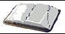

What is Programming?
•pro·gram
Variant(s): also programme
Function: transitive verb
Inflected Form(s): -grammed or -gramed; -gram·ming
or -gram·ing
Date: 1896
2 : to work out a sequence of
operations to be performed by (a mechanism) : provide with a program
